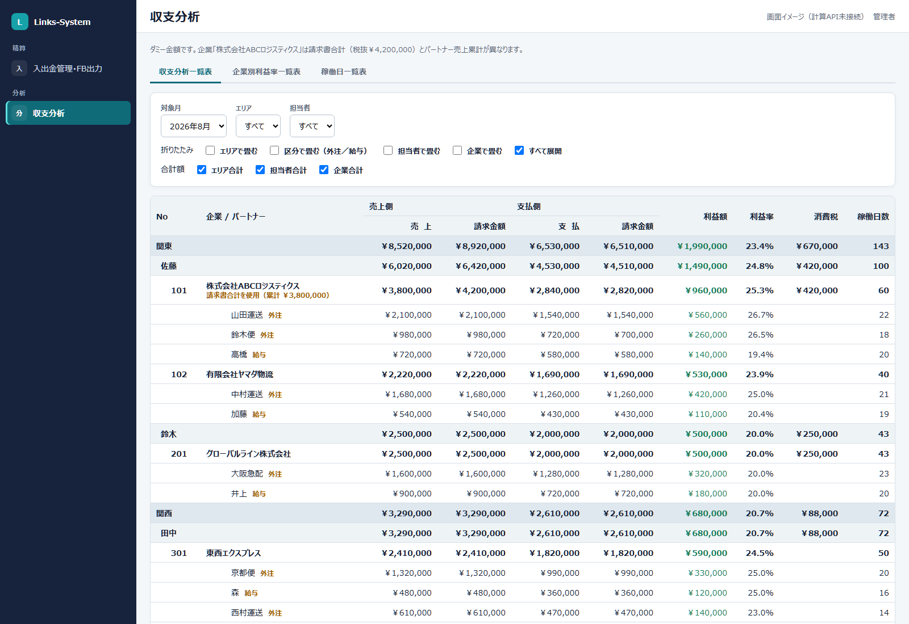
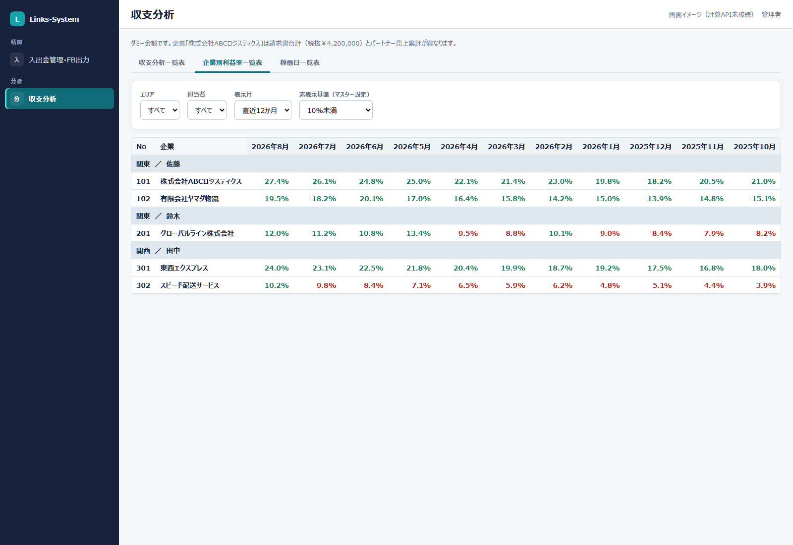
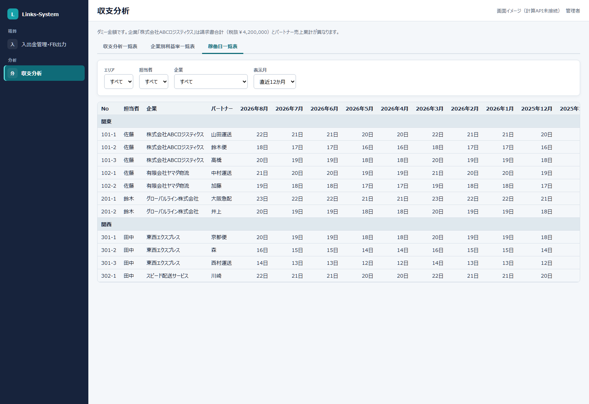

分析 → 収支分析
収支分析
まず、この画面
担当者・企業・パートナーの収支を見る画面です。入力はしません。管理者・経営者・総務が使います。CSV/PDFは後からです。
3つの表



気をつけること
日報や請求を直す画面ではありません。数字がおかしいときは、日報の承認と請求・支払の確定を先に見ます。
分析 → 収支分析
担当者・企業・パートナーの収支を見る画面です。入力はしません。管理者・経営者・総務が使います。CSV/PDFは後からです。


